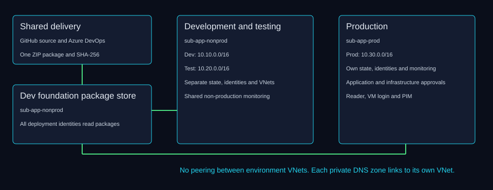

I built a private Azure application platform in Sweden Central with separate development, testing and production environments. Dev and Test share the non-production subscription. Production has its own subscription, identities, network and Terraform state. The shared package store lives in the Dev foundation resource group.
Development
Testing
Production
Subscription
sub-app-nonprod
sub-app-nonprod
sub-app-prod
VNet CIDR
10.10.0.0/16
10.20.0.0/16
10.30.0.0/16
Gateway private IP
10.10.4.10
10.20.4.10
10.30.4.10
App Service plan
B1
P0v3
P0v3
Monitoring
Dev workspace
Shared Dev workspace
Own workspace
Bastion SKU
Developer
Developer
Basic
Application delivery
main completion trigger
main completion trigger
Manual approval
Privileged access
Lab bootstrap admin
Lab bootstrap admin
Reader + VM login, PIM roles

Architecture derived from Terraform and pipeline definitions at the linked source snapshot.
Development and testing share sub-app-nonprod. Production uses sub-app-prod, creating a separate subscription boundary for management access, policy and cost tracking.Source: README.md
Users and access
Application sign-in and infrastructure administration use separate grants. Lab Admin bootstraps the lab and belongs to the app-user groups. Prod Admin has permanent Reader and Virtual Machine User Login, with privileged resource and secret roles available through PIM. PIM activation requires justification and MFA and lasts at most two hours. Conditional Access policies evaluate non-production NAT locations and device-code sign-in in report-only mode.
Account / identity
Scope and capability
Boundary
Lab Admin
Bootstrap across all environments; app-group member
Broad administrator, no declared Entra VM login grant
Prod Admin
Reader + VM User Login permanently; PIM Contributor and secret roles
Prod scope; privileged roles need activation
App-user groups
Sign-in to assigned environment application
No Azure management role; /health excluded
Application MI
Secrets User on own application-vault RG
Secret read; no secret write grant
Gateway MI
Secrets User on certificate vault
Vault scope, not a single certificate
Build MI
Blob Data Contributor on shared packages
Read/write/delete blobs, not upload only
Deploy MI
Website Contributor on own app RG; package Blob Reader
Website management exceeds package deploy
Infra L1 / L2
Contributor on own layer RGs; state and dependency grants
No role assignment; resource changes can use runtime MIs
Destroy MI
Contributor on network/app/vault RGs and state access
At the production subscription scope, Prod Admin has permanently active Reader access and permanent eligibility for Contributor. This provides ongoing visibility into production while requiring PIM activation for Contributor privileges.Source: infra/environments/production/layer-0-foundation/access.tf
Managed identities and role boundaries
Each environment has six user-assigned identities for the application, gateway, deploy, destroy and two infrastructure layers. Dev foundation also hosts the shared build identity. Runtime identities read secrets at their assigned scopes. Pipeline identities use workload identity federation. Contributor and Website Contributor are broader than a single operation, so I document the actual role scopes instead of treating them as strict deploy-only or delete-only permissions.
Production identities reside in a separate subscription, while Dev and Test share the non-production subscription. Each environment has six dedicated identities for Application Gateway, application runtime, deployment, teardown and two infrastructure layers. The development foundation also hosts the shared build identity, bringing its total to seven. A shared build publishes packages that each environment's deployment identity can retrieve.Source: docs/build-log/13-access-matrix.md
Shared CI/CD
Azure DevOps builds one Python package, runs unit tests, records the source commit and SHA-256, and uploads the package to shared storage. Deploy jobs retrieve and verify the same package through environment-specific identities and private application agent pools. YAML enables Dev and Test completion triggers for main builds. Captured lab runs were manual on the working branch. Production deployment requires approval on prod-app, with self-approval enabled in this lab.
Azure DevOps shows successful recent runs for the shared build pipeline, application deployment to Dev, Test and Prod, and both infrastructure layers in each environment. The displayed runs were manually initiated from claude/dev-layer2. This provides execution evidence for the pipelines, without demonstrating automatic promotion or approval checks in this overview.Source: pipelines/templates/deploy-steps.yml
Terraform layers and infrastructure delivery
Layer 0 retains foundation resources and identities. Layer 1 creates networking and operations. Layer 2 creates the application platform. Every environment and layer has a separate state container with Entra authentication. Layer 1 pipelines use hosted agents because they create the private pools. Layer 2 uses the environment infrastructure pool. Production has a plan stage and an approval on prod-infra, followed by a new plan, conditional apply and verification. Build log 12 records No changes runs in all environments.
Azure DevOps lists separate application and infrastructure agent pools for Dev, Test and Prod, alongside the standard pools. This separation allows pipeline execution to be routed by environment and task. The inventory shows pool availability in the project; it does not demonstrate agent health, private network connectivity or pipeline authorization.Source: docs/build-log/12-monitoring-alerts-and-infrastructure-pipelines.md
Networking and private access
The VNets use 10.10.0.0/16, 10.20.0.0/16 and 10.30.0.0/16 with no peering. Subnets separate operations, gateway, application integration, private endpoints and pipeline agents. Private DNS zones link to their own VNet. App Service inbound private endpoints and outbound VNet integration serve different directions of traffic. NSGs use explicit permitted flows followed by deny-all inbound at priority 4000. NAT attaches to operations, application and agent subnets.
Flow
Origin
Destination and purpose
Operations session
Azure portal / Bastion
Ops VM; Prod Entra user login or local emergency account
Application HTTPS
Ops VM 10.30.1.4
Gateway private listener 10.30.4.10:443
Backend HTTPS
Application Gateway
App private endpoint 10.30.5.7:443, then App Service
Internal and privatelink zones; DNS is not an HTTPS hop
Diagnostics
Gateway and application vault
Environment Log Analytics and e-mail action groups
VNet flow logs version 2 and Traffic Analytics are configured in layer 1. Foundation policies cover tags, region, vault access and Web App HTTPS/TLS, with explicit exemptions and budget alerts. Build log 14 records non-production compliance exceptions for Azure-created resources and pending production evaluation.
The production VNet separates Bastion (10.30.0.0/26), operations (10.30.1.0/24), infrastructure agents (10.30.2.0/24), application agents (10.30.3.0/24), Application Gateway (10.30.4.0/24), private endpoints (10.30.5.0/24) and App Service VNet integration (10.30.6.0/24). The view shows subnet delegations and associated security groups. This segmentation enables workload-specific network controls; actual allowed traffic is defined by the security rules, not subnet separation alone.Source: docs/build-log/14-acceptance-checks-and-certificate-trust.md
Development
Development uses sub-app-nonprod and vnet-sits-dev-swc with address space 10.10.0.0/16. The private gateway is 10.10.4.10 and the application hostname is app.dev.sits.internal. App Service uses B1. Development hosts the shared package store and the monitoring workspace used by both non-production environments. Separate application and infrastructure pools run jobs within the Dev network.
The development VNet inventory shows the operations VM interface at 10.10.1.4 and Application Gateway at 10.10.4.10. The private endpoint subnet contains interfaces for the certificate vault (10.10.5.4), administration vault (10.10.5.5), application vault (10.10.5.6) and App Service (10.10.5.7). This view documents network attachment and private addressing; connectivity and access controls require separate evidence.Source: docs/build-log/07-development-network-operations.md
Testing
Testing uses the same non-production subscription but its own resource groups, VNet, identities and state. The VNet is 10.20.0.0/16, the gateway is 10.20.4.10 and the hostname is app.test.sits.internal. App Service uses P0v3. Testing reads the shared package and reuses the Dev Log Analytics and Application Insights resources. This is an explicit monitoring dependency rather than complete resource independence.
The testing VNet inventory shows the operations VM interface at 10.20.1.4 and Application Gateway at 10.20.4.10. Private endpoint interfaces attach the administration vault at 10.20.5.4, certificate vault at 10.20.5.5, application vault at 10.20.5.6 and App Service at 10.20.5.7. The administration and certificate vault address order differs from Dev and Prod. This view documents network attachment and private addressing; it does not by itself prove connectivity or access controls.Source: docs/build-log/10-testing-environment.md
Production
Production uses sub-app-prod and 10.30.0.0/16. App Service uses P0v3 and the private gateway listens at 10.30.4.10 for app.prod.sits.internal. Production has its own monitoring, Bastion Basic, delete locks, PIM and separate approval environments. Public access is disabled on the Web App and application Key Vault. Certificate and admin foundation vaults retain public access, even though private endpoints also exist.
Production App Service public network access is Disabled, with one private endpoint and inbound private IPv4 address 10.30.5.7. Outbound VNet integration uses vnet-sits-prod-swc/snet-app and inherits DNS from the virtual network. The integration subnet has NAT gateway ng-sits-prod-swc and network security group nsg-sits-prod-app-swc; no user-defined route or hybrid connection is configured. Private endpoints provide inbound access while VNet integration provides outbound network connectivity. This overview does not establish routing of every outbound traffic category.Source: docs/build-log/11-production-environment.md
Gateway, WAF and TLS
The WAF_v2 gateway exposes a private HTTPS listener and forwards to the App Service hostname using HTTPS on port 443. A custom /health probe returned HTTP 200 and the backend was Healthy at capture time. Microsoft Default Rule Set 2.1 runs in Detection mode. A managed identity retrieves the listener certificate from the certificate vault. The self-signed certificate is trusted locally on each Ops VM as recorded in build log 14, and must be imported again after renewal or VM rebuild.
Application Gateway reports its single production backend app-sits-prod-swc.azurewebsites.net in the webapp pool as Healthy. The webapp-https backend setting uses HTTPS on port 443, and the health probe received HTTP 200. This demonstrates successful gateway-to-backend health probing at capture time; it does not by itself verify user authentication or every application route.Source: docs/build-log/14-acceptance-checks-and-certificate-trust.md
Operations access through Bastion
Bastion provides the operations entry point without a public IP on the VM NIC. Production supports Microsoft Entra ID sign-in through AADLoginForWindows and the permanent VM User Login grant. My captured session returned azuread\prodadmin. The local opsadmin account remains a separate emergency administrator path. The Entra user session does not need the local VM password or an activated Contributor role.
Inside the Windows VM session, whoami returns azuread\prodadmin. Together with the user-reported Bastion connection using Microsoft Entra ID, this documents a session under the Prod Admin Entra account without entering the local VM account password. The screenshot identifies the session account; it does not establish the specific Entra authentication factors or MFA enforcement.Source: docs/build-log/14-acceptance-checks-and-certificate-trust.md
Runtime validation from the production VM
From source 10.30.1.4, app.prod.sits.internal resolved to the gateway at 10.30.4.10 and TCP port 443 was reachable. App Service resolved through privatelink.azurewebsites.net to 10.30.5.7. The application vault resolved through privatelink.vaultcore.azure.net to 10.30.5.6. These terminal outputs prove private DNS resolution and gateway TCP reachability. Build log 14 separately records trusted HTTPS /health responses and cross-environment DNS isolation tests.
The PowerShell session at C:\Users\ProdAdmin shows app.prod.sits.internal resolving to 10.30.4.10 and a successful TCP connection to port 443 from source 10.30.1.4. App Service resolves through its privatelink.azurewebsites.net alias to 10.30.5.7, and the application Key Vault resolves through its privatelink.vaultcore.azure.net alias to 10.30.5.6. TcpTestSucceeded and NameResolutionSucceeded are True; PingSucceeded is False. Together with the separate whoami screenshot, this records runtime checks in the user-reported Entra-authenticated Prod Admin session. The checks establish DNS resolution and gateway TCP reachability, not TLS trust, HTTP responses, or backend authorization.Source: docs/build-log/14-acceptance-checks-and-certificate-trust.md
Application and identity
The Python demo runs on Linux App Service with Entra Easy Auth. An assigned application group controls protected routes. The application managed identity reads the application vault, while a federation credential supports the sign-in configuration without an app-registration client secret. The /health route deliberately allows anonymous probing from network-authorized clients. Application access and Key Vault RBAC remain separate checks.
Gateway allLogs and AllMetrics stream to the production Log Analytics workspace using AzureDiagnostics tables. Dev and Test share the non-production workspace. Four custom alert rules per environment cover application health, unhealthy gateway backends, denied application-vault access and WAF matches. Production also has a Failure Anomalies smart detector. The Application Insights overview had no request telemetry in its selected one-hour window, so it does not prove active application instrumentation.
Diagnostic setting diag-log-sits-prod-swc selects the allLogs category group and AllMetrics for Application Gateway. The destination is Log Analytics workspace log-sits-prod-swc in sub-app-prod, with Azure diagnostics selected rather than resource-specific tables. Storage account archiving, Event Hub streaming and partner solution destinations are unchecked. This documents collection configuration; actual log ingestion requires query evidence.Source: infra/environments/production/layer-2-application/alerts.tf
Observed alerts
The captured Azure Monitor view lists 16 fired instances across the selected subscriptions: 13 warnings and three informational alerts. These include repeated Key Vault access-denied results and WAF matches. WAF is in Detection, so a matched request does not establish prevention-mode blocking. The alert inventory and fired instances show configuration and observed events separately.
With two subscriptions selected, a Past 24 hours time range and Fired condition filter, Azure Monitor lists 16 alert instances: 13 Warning and three Informational, with zero Critical or Error instances. Visible alerts include WAF request matches for Dev, Test and Prod and repeated Key Vault access-denied alerts across the three environments. Production alerts target log-sits-prod-swc, while Dev and Test alerts target log-sits-dev-swc. User response is New. This demonstrates fired monitoring alerts; it does not establish malicious activity, the reason for each denied request, WAF blocking or successful Application Insights request telemetry.Source: docs/build-log/12-monitoring-alerts-and-infrastructure-pipelines.md
On October 7, 2026, Azure Monitor shows two Fired alert instances in the selected past-24-hours window: alert-sits-test-keyvault-access-denied (Warning, targeting log-sits-dev-swc) and alert-sits-prod-waf-request-matched (Informational, targeting log-sits-prod-swc). This demonstrates that monitoring evaluated collected events and generated alerts. The screenshot does not establish notification delivery, the cause of the denied access, or WAF request blocking.
Limitations and next steps
The current lab is deployed and demonstrated. Next work includes Terraform modules, a destroy-and-rebuild exercise, removal of temporary administrator state grants after approval, WAF Prevention after tuning, Conditional Access enforcement after report review, and a certificate from a trusted CA. Developer and tester infrastructure groups and app-user/app-denied demonstration accounts are not implemented. Foundation vault public exposure, shared monitoring dependencies and broad built-in roles remain visible design limits.
121 original screenshots, grouped by topic. Open a topic and click an image for its original resolution. Each caption describes the observed result and its limits.
Overview (2 screenshots)
Prod demo application
The production demo application provides a browser view of the deployed application and its identity and Key Vault checks. This is application evidence, separate from infrastructure configuration.
Subscriptions
Development and testing share sub-app-nonprod. Production uses sub-app-prod, creating a separate subscription boundary for management access, policy and cost tracking.Users and access (25 screenshots)
The development enterprise application requires explicit user or group assignment for sign-in. The same assignment requirement is configured across Dev, Test and Prod, keeping protected application access limited to assigned users.
The development enterprise application has its dedicated app-user group assigned, alongside a direct assignment for Lab Admin. Explicit application assignments keep development sign-in access separate from other environments and from Azure infrastructure permissions.
The named location contains the development and testing NAT egress addresses as individual /32 ranges and is not marked as trusted. The production administrator Conditional Access policy uses this location to evaluate sign-ins originating from non-production networks; enforcement remains Report-only.
Production uses two distinct identities: app-sits-prod is the enterprise application for user sign-in, while id-sits-prod-app-swc is the managed identity used by the running application to access Azure services. This separates user authentication from application resource access.
The production enterprise application requires explicit user or group assignment for sign-in. This prevents unassigned users from accessing protected application routes; Lab Admin and the production app-user group are assigned separately.
The replacement screenshot shows both production administrator Conditional Access policies in Report-only mode, together with their creation dates. The controls are evaluated without enforcing blocks, allowing their sign-in impact to be reviewed before enforcement.
The production administrator device-code policy targets deviceCodeFlow across all resources with a Block access control. It remains Report-only: sign-ins are evaluated without enforcing the block, allowing impact to be reviewed before activation. The detail also shows one included user, one excluded user and the creation timestamp; individual identities are defined in Terraform and are not named in this view.
The production enterprise application has the production app-user group assigned, alongside a direct assignment for Lab Admin. These application assignments are separate from Azure infrastructure roles. The direct user assignment is visible portal evidence in addition to the group assignment declared in Terraform.
The production enterprise application is activated and enabled for user sign-in. It provides the Entra ID sign-in entry for the production application; access assignments are shown separately. The Assignment required setting is not visible in this screenshot.
The production administrator location policy includes one location and a Block access control across all resources. It remains Report-only, evaluating sign-ins without enforcing a block. The policy is designed to restrict production administration from development and testing NAT addresses; the addresses themselves are shown separately in the named location evidence.
The testing enterprise application requires explicit user or group assignment for sign-in. Combined with its dedicated app-user group, this restricts protected application access to assigned users rather than all tenant users.
The testing enterprise application is assigned to its dedicated app-user group. Lab Admin is a member of that group, so testing access is granted through group membership rather than a separate direct user assignment shown here. This keeps application access managed at the environment group level.
The production administration vault kv-sits-prod-adm-swc allows public access from all networks. Like the certificate vault, it is not configured for private-only network access. This records the current lab configuration and a network-hardening opportunity; authentication and authorization are separate from network reachability.
The administration vault lists private endpoint pe-kv-sits-prod-adm-swc with connection psc-kv-sits-prod-adm-swc targeting the vault subresource in vnet-sits-prod-swc/snet-pe. Its state is Approved. The portal warns that firewall settings allow access from all networks, so the approved private endpoint coexists with public network access.
Prod Admin has permanently active Virtual Machine User Login at the production network resource group scope, with Reader access and eligible Contributor inherited from the subscription. VM sign-in authorization is separated from the Contributor privileges that require PIM activation.
Prod admin subscription reader and eligible contributor
At the production subscription scope, Prod Admin has permanently active Reader access and permanent eligibility for Contributor. This provides ongoing visibility into production while requiring PIM activation for Contributor privileges.
Prod Admin has a direct eligible Key Vault Secrets User assignment on kv-sits-prod-adm-swc, alongside inherited eligible Contributor access. Permanent eligibility permits activation when needed; it does not represent permanently active secret-read access.
Prod Admin has a direct eligible Key Vault Secrets Officer assignment at the production application-vault resource group scope, alongside inherited eligible Contributor access. This separates secret-management eligibility from permanently active access and applies to vaults within this resource group.
Production Contributor activation is limited to two hours and requires Azure MFA and a justification. Activation does not require an approver or ticket information. Permanent eligibility is allowed, while permanent active assignments are disabled in these role settings, separating eligibility from time-limited privileged access.
Prod Admin has a direct PIM-eligible Contributor assignment at production subscription scope. Permanent refers to the eligibility period, not permanently active Contributor privileges; activation is required before using the role. Activation duration and requirements are shown separately.
The production foundation resource group shows Prod Admin's inherited eligible Contributor assignment. This reflects eligibility inherited from the subscription scope, rather than a direct Key Vault data-access assignment.Managed identities (20 screenshots)
Managed identities subscription overview
Production identities reside in a separate subscription, while Dev and Test share the non-production subscription. Each environment has six dedicated identities for Application Gateway, application runtime, deployment, teardown and two infrastructure layers. The development foundation also hosts the shared build identity, bringing its total to seven. A shared build publishes packages that each environment's deployment identity can retrieve.
The azure-devops-build federated credential specifies the tenant's Microsoft Entra v2.0 issuer, a workload subject identifier and the api://AzureADTokenExchange audience. These trust parameters constrain which external workload token can be exchanged for access as the build managed identity, without a stored client secret. The subject identifier is truncated in the screenshot.
The shared build managed identity has a federated credential named azure-devops-build. This trust enables the configured Azure DevOps workload to obtain tokens as the managed identity without storing a client secret. The list shows the issuer and a truncated subject identifier; credential details are required to document the complete trust configuration.
The shared build identity has Storage Blob Data Contributor on the packages container in stsitspkgswc (resource name shown in the portal: stsitspkgswc/default/packages), within the non-production subscription. Container-scoped blob access supports publishing build artifacts for deployment; this role also permits reading and deleting blobs, rather than upload-only access.
The Dev application managed identity has Key Vault Secrets User at the rg-sits-dev-kv-swc resource group scope. This supports identity-based access to application secrets without stored Azure credentials. The assignment covers vaults within this resource group and permits reading secret values, rather than metadata-only access.
The Dev deployment identity has Website Contributor on rg-sits-dev-app-swc and Storage Blob Data Reader on the shared packages container. This scopes application management to Dev and allows retrieval of build artifacts without granting the deployment identity permission to modify or delete package blobs.
The Dev teardown identity has Storage Blob Data Contributor on the Layer 1 and Layer 2 Terraform state containers, Contributor on the application, application-vault and network resource groups, Network Contributor on NetworkWatcherRG and Reader on the foundation resource group. These scoped assignments support teardown and dependency discovery through a separate identity. Contributor also permits creating and updating resources, not deletion alone.
The Dev Application Gateway identity has Key Vault Secrets User on kv-sits-dev-cert-swc, supporting identity-based retrieval of the secret backing its TLS certificate. Access is scoped to the certificate vault, rather than a single certificate secret.
Separate managed identities are provisioned for application runtime, Application Gateway, infrastructure layers, deployment and teardown in each environment. A shared build identity resides in the development foundation resource group. This separation enables role assignments to be scoped by workload and environment; the inventory itself does not show the granted permissions.
The production application managed identity has Key Vault Secrets User at the rg-sits-prod-kv-swc resource group scope. This supports identity-based access to application secrets without stored Azure credentials. The assignment covers vaults in this resource group and permits reading secret values, rather than metadata-only access.
Prod deploy identity federated credential
The production deployment managed identity has a federated credential named azure-devops-prod-deploy. This trust supports workload identity federation for production deployment without a stored client secret, using an identity separate from build and infrastructure tasks. The subject identifier is truncated in this list view.
Prod deploy identity package reader
The production deployment identity has Storage Blob Data Reader on stsitspkgswc/default/packages in the non-production subscription. This container-scoped, read-only data access allows production deployment to retrieve shared build artifacts without granting permission to modify or delete those blobs.
Prod deploy identity website contributor
The production deployment identity has Website Contributor scoped to rg-sits-prod-app-swc. This enables application deployment and website management within the production application resource group while separating deployment from broader infrastructure identities. The role permits more than package deployment alone.
Prod destroy identity role assignments
The production teardown identity has Contributor on the network, application and application-vault resource groups, SITS Lock Remover on the application and vault groups, and blob data access to two Terraform state containers. Foundation Reader and Network Contributor on NetworkWatcherRG support dependency discovery and network cleanup. This separates teardown identity from provisioning identities, but Contributor also permits creation and updates, not deletion alone. State container names are truncated in the screenshot.
Prod gateway identity certificate vault role
The production Application Gateway managed identity has Key Vault Secrets User scoped to kv-sits-prod-cert-swc. This enables identity-based retrieval of the secret backing its TLS certificate. The permission is assigned at vault scope, rather than restricted to one certificate secret.
Prod operations vm system assigned identity
The production operations VM has its system-assigned managed identity set to On, with a principal ID displayed. This documents the identity configuration; it does not establish any Azure role grants or a successful user sign-in.
Test app identity keyvault secrets user
The Test application identity has Key Vault Secrets User at rg-sits-test-kv-swc resource group scope, enabling identity-based secret access without stored Azure credentials. The role covers vaults in this group and permits reading secret values.
Test deploy identity role assignments
The Test deployment identity has Website Contributor on rg-sits-test-app-swc and Storage Blob Data Reader on the shared packages container. This separates Test application management from artifact publication, allowing deployments to retrieve build packages without modifying them.
Test destroy identity role assignments
The Test teardown identity has Contributor on Test network, application and vault resource groups and blob data access to both Terraform state containers. NetworkWatcherRG permissions and Reader on Test foundation and shared Dev monitoring support cleanup and dependency discovery. Contributor permits creating and updating resources as well as deleting them.
Test gateway identity certificate vault role
The Test Application Gateway identity has Key Vault Secrets User on kv-sits-test-cert-swc, supporting identity-based retrieval of the secret backing its TLS certificate. Permission is assigned at certificate-vault scope.Shared CI/CD (12 screenshots)
Azure devops agent pools all environments
Azure DevOps lists separate application and infrastructure agent pools for Dev, Test and Prod, alongside the standard pools. This separation allows pipeline execution to be routed by environment and task. The inventory shows pool availability in the project; it does not demonstrate agent health, private network connectivity or pipeline authorization.
Azure devops service connections federation
Thirteen Azure Resource Manager service connections use manually configured workload identity federation: one shared build connection and separate deploy, teardown and two infrastructure-layer connections for each environment. This separates pipeline authentication by task and environment without stored Azure client secrets. A separate GitHub connection provides repository integration. Manual describes the federation configuration method, not the pipeline trigger.
Azure devops successful pipeline overview
Azure DevOps shows successful recent runs for the shared build pipeline, application deployment to Dev, Test and Prod, and both infrastructure layers in each environment. The displayed runs were manually initiated from claude/dev-layer2. This provides execution evidence for the pipelines, without demonstrating automatic promotion or approval checks in this overview.
Dev app managed pool details
The Dev application Managed DevOps Pool is backed by an Azure resource in the Dev network resource group in Sweden Central. Its displayed configuration uses Standard_D2ads_v5, parallelism 1, stateless agents, a delegated subnet and zero public IPs. This supports pipeline execution within the environment network without public agent IPs; the screenshot does not itself verify endpoint connectivity.
Dev infra managed pool details
The Dev infrastructure Managed DevOps Pool is backed by an Azure resource in rg-sits-dev-network-swc within the non-production subscription. Its displayed configuration uses Standard_D2ads_v5 in Sweden Central, parallelism 1, stateless agents, a delegated subnet and zero public IPs. A separate infrastructure pool allows infrastructure jobs to be routed independently of application deployment jobs; this view does not verify pipeline authorization or endpoint connectivity.
Prod app approval settings details
Lab Admin is the configured approver for the production application environment, with a 30-day approval timeout. Instructions ask the approver to review the build run, version, SHA-256 fingerprint and testing results before approving. Approval of the approver's own runs is enabled, so this lab demonstrates a manual approval gate rather than enforced separation between requester and approver.
Prod app environment approval check
The prod-app Azure DevOps environment has an Approvals check requiring all configured approvers to approve, with a 30-day timeout. This establishes an approval gate for deployment stages that reference this environment. The environment description mentions build fingerprint verification; this screenshot demonstrates the configured approval check, not execution of SHA-256 verification or self-approval restrictions.
Prod app managed pool details
The production application Managed DevOps Pool is backed by an Azure resource in the production network resource group and subscription in Sweden Central. It uses Standard_D2ads_v5, parallelism 1, stateless agents, a delegated subnet and zero public IPs. This provides a separate execution pool for production application jobs within the production network; endpoint connectivity is verified separately.
Prod deploy service connection overview
The prod-deploy Azure Resource Manager service connection uses OpenID Connect workload identity federation with the production deployment managed identity. Its issuer and subject identifier define the federated trust; they are configuration identifiers, not credentials or bearer tokens. The description references deployment after approval, but approval enforcement must be evidenced separately.
Prod infra managed pool details
The production infrastructure Managed DevOps Pool is backed by an Azure resource in rg-sits-prod-network-swc within the separate production subscription. It uses Standard_D2ads_v5 in Sweden Central, parallelism 1, stateless agents, a delegated subnet and zero public IPs. This separates production infrastructure execution from application deployment jobs and non-production pools.
Test app managed pool details
The Test application Managed DevOps Pool is backed by an Azure resource in the Test network resource group within the non-production subscription. Its displayed configuration uses Standard_D2as_v5 in Sweden Central, parallelism 1, stateless agents, a delegated subnet and zero public IPs. This provides separate execution for Test application jobs within the Test network; endpoint connectivity is verified separately.
Test infra managed pool details
The Test infrastructure Managed DevOps Pool is backed by an Azure resource in rg-sits-test-network-swc within the non-production subscription. It uses Standard_D2as_v5 in Sweden Central, parallelism 1, stateless agents, a delegated subnet and zero public IPs. The separate infrastructure pool supports routing Test infrastructure jobs independently of application deployment jobs.Production networking and operations (47 screenshots)
Bastions all environments
The Azure Bastions inventory lists bas-sits-dev-swc, bas-sits-test-swc, and bas-sits-prod-swc in Sweden Central, each in its environment-specific network resource group. Development and testing use sub-app-nonprod, while production uses sub-app-prod. This documents a separate Bastion resource for each environment; connection success is separate evidence.
Prod admin session runtime dns and gateway connectivity
The PowerShell session at C:\Users\ProdAdmin shows app.prod.sits.internal resolving to 10.30.4.10 and a successful TCP connection to port 443 from source 10.30.1.4. App Service resolves through its privatelink.azurewebsites.net alias to 10.30.5.7, and the application Key Vault resolves through its privatelink.vaultcore.azure.net alias to 10.30.5.6. TcpTestSucceeded and NameResolutionSucceeded are True; PingSucceeded is False. Together with the separate whoami screenshot, this records runtime checks in the user-reported Entra-authenticated Prod Admin session. The checks establish DNS resolution and gateway TCP reachability, not TLS trust, HTTP responses, or backend authorization.
Prod app keyvault networking
The production application Key Vault kv-sits-prod-app-swc has Disable public access selected. The trusted Microsoft services firewall bypass option is unchecked. This documents the vault's public network access configuration; private endpoint connection approval and DNS integration are documented separately.
Prod app keyvault private endpoint connection
The application Key Vault lists private endpoint pe-kv-sits-prod-app-swc with connection psc-kv-sits-prod-app-swc targeting the vault subresource. The connection state is Approved and the endpoint is attached to vnet-sits-prod-swc/snet-pe. Together with the networking screenshot, this documents an approved private connection while public access is disabled. DNS resolution and authorized secret access are separate checks.
Prod app keyvault private endpoint dns
The application Key Vault private endpoint DNS configuration lists nic-pe-kv-sits-prod-app-swc at 10.30.5.6 and customer-visible hostname kv-sits-prod-app-swc.vault.azure.net. Its default DNS zone group is associated with privatelink.vaultcore.azure.net, with the configured private DNS entry pointing to 10.30.5.6. The full private FQDN is kv-sits-prod-app-swc.privatelink.vaultcore.azure.net. This documents DNS integration configuration; runtime resolution is a separate check.
Prod app private dns vnet link
The privatelink.azurewebsites.net private DNS zone lists one virtual network link, link-webapp-vnet-sits-prod-swc, to vnet-sits-prod-swc. Link status is Completed. Auto-registration and Fallback to Internet are Disabled. This documents the zone-to-VNet association; runtime DNS resolution is separate evidence.
Prod app private endpoint dns
The private endpoint DNS configuration associates the default DNS zone group with privatelink.azurewebsites.net. Both app-sits-prod-swc.privatelink.azurewebsites.net and app-sits-prod-swc.scm.privatelink.azurewebsites.net have the private endpoint address 10.30.5.7. The customer-visible application and SCM hostnames are also listed. This documents configured DNS integration for application and deployment endpoints; runtime name resolution is verified separately.
Prod app private endpoint overview
The production App Service private endpoint pe-app-sits-prod-swc has provisioning state Succeeded and connection status Approved. It connects to the sites subresource of app-sits-prod-swc through nic-pe-app-sits-prod-swc in vnet-sits-prod-swc/snet-pe. This confirms an approved Private Link association; DNS resolution, application reachability and public access settings are verified separately.
Prod app service networking
Production App Service public network access is Disabled, with one private endpoint and inbound private IPv4 address 10.30.5.7. Outbound VNet integration uses vnet-sits-prod-swc/snet-app and inherits DNS from the virtual network. The integration subnet has NAT gateway ng-sits-prod-swc and network security group nsg-sits-prod-app-swc; no user-defined route or hybrid connection is configured. Private endpoints provide inbound access while VNet integration provides outbound network connectivity. This overview does not establish routing of every outbound traffic category.
Prod app service overview
The production App Service is Running on Linux with Python 3.12 and a single PremiumV3 P0v3 instance. The overview reports a healthy runtime and a 100% health check result with one healthy instance. It lists production Application Insights, one private endpoint connection and outbound VNet integration with vnet-sits-prod-swc/snet-app. The displayed inbound IP addresses do not establish whether public network access is enabled; that setting is documented separately.
Prod application gateway backend health
Application Gateway reports its single production backend app-sits-prod-swc.azurewebsites.net in the webapp pool as Healthy. The webapp-https backend setting uses HTTPS on port 443, and the health probe received HTTP 200. This demonstrates successful gateway-to-backend health probing at capture time; it does not by itself verify user authentication or every application route.
Prod application gateway listeners
The https-prod listener accepts HTTPS on port 443 using the private IPv4 frontend and hostname app.prod.sits.internal. It is associated with routing rule app-prod. The gateway uses predefined SSL policy AppGwSslPolicy20220101 with minimum protocol version TLS 1.2. Certificate source and backend routing details are documented separately.
Prod application gateway overview
The production Application Gateway agw-sits-prod-swc uses the WAF V2 tier in Sweden Central and attaches to vnet-sits-prod-swc/snet-agw. Its frontend private IP address is 10.30.4.10, with no frontend public IP address listed. This documents the private frontend configuration; the WAF operating mode, listener configuration and backend health are documented separately.
Prod application gateway tls certificate details
The certificate detail panel shows cert-app-prod as an Active Key Vault certificate expiring October 5, 2027, associated with listener https-prod. Subject common name, issuer common name and subject alternative name are app.prod.sits.internal. A managed identity reference and SHA-1 certificate thumbprint are displayed but truncated. The panel records certificate metadata and its listener association, without exposing secret values or private key material.
Prod application gateway tls certificate
Listener certificate cert-app-prod is sourced from the versionless Key Vault secret URI https://kv-sits-prod-cert-swc.vault.azure.net/secrets/cert-app-prod. The portal reports it as Active, expiring October 5, 2027, with common name app.prod.sits.internal and one associated listener. This view documents the certificate reference and status, without exposing certificate private key material or secret values. It does not establish trust by a public certificate authority.
Prod bastion overview
Production Bastion bas-sits-prod-swc uses the Basic tier in Sweden Central and attaches to vnet-sits-prod-swc/AzureBastionSubnet. Provisioning state is Succeeded and availability zone is None. A public DNS name is listed, while the public IPv4 and IPv6 fields display dashes. Those fields alone do not establish a private-only Bastion deployment. The operations NSG separately documents RDP access from the Bastion subnet.
Prod cert keyvault networking
The production certificate vault kv-sits-prod-cert-swc allows public access from all networks. This is broader network exposure than the application vault, whose public access is disabled. Authentication and authorization remain required; a private endpoint does not disable the public endpoint. This screenshot records the current lab configuration and a network-hardening opportunity.
Prod cert keyvault private endpoint connection
The certificate vault lists private endpoint pe-kv-sits-prod-cert-swc with connection psc-kv-sits-prod-cert-swc targeting the vault subresource in vnet-sits-prod-swc/snet-pe. Its connection state is Approved. The portal also warns that firewall settings allow access from all networks. The approved private connection therefore coexists with public network access; it does not establish private-only access.
Prod gateway backend https settings
The webapp-https backend setting shows HTTPS on port 443 with Complete validation and Public CA selected for backend server certificate validation. The request timeout is 30 seconds. Cookie-based affinity, connection draining and dedicated backend connection are disabled. Hostname override is enabled with the specific domain app-sits-prod-swc.azurewebsites.net. These are backend TLS settings, separate from the frontend listener certificate. The lower custom probe configuration is outside the visible panel area.
Prod gateway health probe
Custom probe webapp-health uses HTTPS with explicit host app-sits-prod-swc.azurewebsites.net and path /health. It inherits the port from backend setting webapp-https. The interval and timeout are both 30 seconds, with an unhealthy threshold of three. Matching accepts HTTP status codes 200-399 with no response body condition. The separate backend health screenshot reports an actual HTTP 200 response at capture time.
Prod gateway routing rules
The production gateway rules overview lists one Basic routing rule, app-prod, associated with listener https-prod and priority 100. Backend routing targets are not shown in this overview.
Prod gateway rule backend routing
The Routing panel for the existing app-prod rule shows Basic routing to backend pool webapp using backend setting webapp-https. Together with the listener detail and backend health evidence, this documents the configured route from https-prod to the production application backend. No path-based or advanced rule type is selected.
Prod gateway rule listener
The app-prod routing rule has priority 100 and uses listener https-prod. This panel documents the listener side of the rule; the backend target and backend settings are shown separately in the Routing step.
Prod infra layer1 role assignments
The production Layer 1 infrastructure identity has Contributor on the network resource group and Storage Blob Data Contributor on a Terraform state container. Additional scoped assignments provide foundation resource visibility and management of the certificate and admin vaults, flow-log storage, Log Analytics workspace and NetworkWatcherRG. These permissions support network provisioning and its cross-layer dependencies. Key Vault Contributor is a management-plane role, not secret-value read access; the state container name is truncated in this screenshot.
Prod infra layer2 role assignments
The production Layer 2 identity has Contributor and SITS Lock Creator on the application and application-vault resource groups, plus blob data access to a Terraform state container. Scoped foundation Reader, Network Contributor, Log Analytics Contributor and Managed Identity Operator assignments support application provisioning and its network, monitoring and identity dependencies. Managed Identity Operator permits assigning the specified runtime identities to resources. The state container name is truncated in this view.
Prod internal dns app record
The prod.sits.internal private DNS zone contains an app A record pointing to 10.30.4.10, the production Application Gateway private frontend address. The record has a TTL of 300 seconds and Auto registered is False. This documents the configured mapping for app.prod.sits.internal; runtime DNS resolution is separate evidence.
Prod keyvault private dns vnet link
The privatelink.vaultcore.azure.net private DNS zone lists one virtual network link, link-keyvault-vnet-sits-prod-swc, to vnet-sits-prod-swc. Link status is Completed, with Auto-registration and Fallback to Internet Disabled. This documents the production zone-to-VNet association; runtime DNS resolution is separate evidence.
Prod nat gateway outbound ip
Production NAT gateway ng-sits-prod-swc is associated with public IPv4 resource pip-sits-prod-nat-swc at 172.160.250.161. No public IP prefixes are configured. This documents the configured outbound address; subnet associations and runtime egress behavior are separate evidence.
Prod nat gateway overview
Production NAT gateway ng-sits-prod-swc uses the Standard SKU in Sweden Central, Zone 1. The overview lists vnet-sits-prod-swc, four associated subnets, one public IP address and no public IP prefixes. Subnet names and the outbound address are documented separately. This records the NAT gateway configuration, not a runtime test of outbound traffic.
Prod nat gateway subnet associations
Production NAT gateway ng-sits-prod-swc is associated with snet-app (10.30.6.0/24), snet-agents-app (10.30.3.0/24), snet-agents-infra (10.30.2.0/24) and snet-ops (10.30.1.0/24) in vnet-sits-prod-swc. The private endpoint, Application Gateway and Bastion subnets are not selected. Together with the outbound IP evidence, this documents the configured NAT associations; it does not prove that every application traffic category routes through the integration subnet.
Prod nat public ip overview
Public IP resource pip-sits-prod-nat-swc has address 172.160.250.161, Standard SKU and Regional tier in Sweden Central, Zone 1. It is associated with NAT gateway ng-sits-prod-swc. No DNS name or virtual machine association is listed. This documents the public IP resource used by the NAT gateway.
Prod network resource group filtered overview
The production network resource group is hosted in the separate production subscription in Sweden Central. This filtered resource view shows the application security group for the admin Key Vault private endpoint, used to identify that endpoint in network security rules. The resource search is filtered by 'prod admin', so this screenshot does not show the full network inventory or user role assignments.
Prod operations nsg rules
The operations NSG allows inbound TCP 3389 from the Bastion subnet 10.30.0.0/26 to the operations VM application security group at priority 100. A custom deny-all inbound rule at priority 4000 precedes default inbound rules. A custom outbound rule at priority 100 denies traffic from the operations VM ASG to the AzureResourceManager service tag. Default VNet and Internet outbound allow rules remain; this is not a blanket outbound deny. Some rule and ASG names are truncated. The screenshot documents configured rules rather than a runtime connectivity test.
Prod operations vm bastion authentication options
The Bastion connection page for vm-sits-prod-ops-swc identifies bas-sits-prod-swc with Basic SKU and provisioning state Succeeded. The Authentication Type menu shows Microsoft Entra ID, VM Password, and VM Password from Azure Key Vault, with Microsoft Entra ID selected. The page requires authentication for the VM connection and lists IAM role access and the AAD login extension as prerequisites. This documents the connection workflow and available authentication choices, rather than a completed login.
Prod operations vm bastion connect
The Connect page for vm-sits-prod-ops-swc shows Bastion as Configured and offers the Go to Bastion entry point for an Azure portal connection. This documents the available connection method; a successful session is separate evidence.
Prod operations vm bastion password login
The Bastion page for vm-sits-prod-ops-swc shows VM Password authentication selected, username opsadmin, and a masked password field. The associated Bastion is bas-sits-prod-swc, Basic SKU, with provisioning state Succeeded. This captures the local VM credential authentication workflow; it does not demonstrate Microsoft Entra ID login or a successful connection.
Prod operations vm entra login extension
The production operations VM lists AADLoginForWindows, type Microsoft.Azure.ActiveDirectory.AADLoginForWindows, version 2.2.0.0, with status Provisioning succeeded. The portal lists the same version as Latest Version and automatic upgrade status Disabled. This documents installation of the Entra login extension; a successful user sign-in is separate evidence.
Prod operations vm entra login whoami
Inside the Windows VM session, whoami returns azuread\prodadmin. Together with the user-reported Bastion connection using Microsoft Entra ID, this documents a session under the Prod Admin Entra account without entering the local VM account password. The screenshot identifies the session account; it does not establish the specific Entra authentication factors or MFA enforcement.
Prod operations vm overview
The production operations VM vm-sits-prod-ops-swc is Running in Sweden Central, availability zone 1, using Windows Server 2022 Datacenter Azure Edition and Standard D2s v6 with two vCPUs and 8 GiB memory. It has private IP 10.30.1.4 in vnet-sits-prod-swc/snet-ops. The primary NIC public IP field is empty; the listed public address 172.160.250.161 is explicitly associated with NAT gateway ng-sits-prod-swc. Trusted launch, Secure Boot and vTPM are enabled, and the VM agent is Ready. This captures configuration and status at the time of the screenshot.
Prod operations vm runtime dns and gateway connectivity
PowerShell resolves app.prod.sits.internal to 10.30.4.10 with TTL 300. Test-NetConnection confirms TCP port 443 is reachable at that address from source 10.30.1.4, with TcpTestSucceeded True. The App Service hostname resolves through app-sits-prod-swc.privatelink.azurewebsites.net to 10.30.5.7, and the application Key Vault hostname resolves through kv-sits-prod-app-swc.privatelink.vaultcore.azure.net to 10.30.5.6. These outputs demonstrate runtime private DNS resolution from the operations VM and TCP connectivity to the gateway; they do not verify TLS certificate trust, HTTP responses, or authorization to App Service or Key Vault.
Prod private endpoint nsg rules
The private endpoint NSG has seven custom TCP 443 allow rules at priorities 100-160 targeting application security groups: gateway and application agents to the web app; App Service integration and infrastructure agents to the application vault; gateway and infrastructure agents to the certificate vault; infrastructure agents to the administration vault. A custom deny-all inbound rule at priority 4000 precedes the default inbound rules. No custom outbound rules are listed; default outbound rules remain. Some rule and ASG names are truncated. This documents configured rules; enforcement on private endpoint interfaces also depends on subnet private endpoint network policies.
Prod private endpoint subnet network policies
The snet-pe detail panel shows address range 10.30.5.0/24 and private endpoint network policy set to Route tables, Network security groups. The associated NSG is nsg-sits-prod-pe-swc; NAT gateway, route table and subnet delegation are None. Enable private subnet (no default outbound access) is checked. This documents the displayed subnet policy configuration supporting NSG evaluation for private endpoints; it is separate from runtime traffic tests.
Prod vnet connected devices
The production VNet view shows the operations VM interface at 10.30.1.4, Application Gateway at 10.30.4.10, and private endpoint interfaces for the certificate vault (10.30.5.4), administration vault (10.30.5.5), application vault (10.30.5.6) and App Service (10.30.5.7). Bastion appears in AzureBastionSubnet. These interfaces show where resources attach to the network; this inventory alone does not prove connectivity or access rules.
Prod vnet subnets
The production VNet separates Bastion (10.30.0.0/26), operations (10.30.1.0/24), infrastructure agents (10.30.2.0/24), application agents (10.30.3.0/24), Application Gateway (10.30.4.0/24), private endpoints (10.30.5.0/24) and App Service VNet integration (10.30.6.0/24). The view shows subnet delegations and associated security groups. This segmentation enables workload-specific network controls; actual allowed traffic is defined by the security rules, not subnet separation alone.
Prod waf managed rules
The production WAF managed rules view lists Microsoft_DefaultRuleSet_2.1 with 190 rules. Visible examples for local file inclusion, remote file inclusion and remote command execution are Enabled with Anomaly score actions. The banner confirms Detection mode. This screenshot documents the ruleset version and representative rule settings, not the status of every rule or observed attack detections.
Prod waf policy association
The WAF policy waf-sits-prod-swc is associated at Application Gateway scope with agw-sits-prod-swc in rg-sits-prod-app-swc. This confirms that the documented production WAF policy is attached to the production gateway. Its Enabled state and Detection mode are shown in the separate policy overview.
Prod waf policy overview
The production Application Gateway WAF policy waf-sits-prod-swc is Enabled in Detection mode and shows one association. Detection mode supports observing rule matches without claiming prevention-mode blocking. The overview does not identify the associated resource or show the configured managed rule set; those details are documented separately.Development (4 screenshots)
Dev infra layer1 role assignments
The Dev Layer 1 infrastructure identity has Contributor on the development network resource group and Storage Blob Data Contributor on the tfstate-layer1 container. Scoped assignments also provide foundation visibility and management of the admin and certificate vaults, Log Analytics workspace, NetworkWatcherRG and flow-log storage. These permissions support network provisioning and its foundation dependencies; Key Vault Contributor manages vault resources rather than granting secret-value read access.
Dev infra layer2 role assignments
The Dev Layer 2 identity has Contributor on the application and application-vault resource groups and Storage Blob Data Contributor on the tfstate-layer2 container. Foundation Reader, Network Contributor and Log Analytics Contributor support provisioning dependencies, while Managed Identity Operator on the application and gateway identities permits assigning those identities to resources.
Dev vnet connected devices
The development VNet inventory shows the operations VM interface at 10.10.1.4 and Application Gateway at 10.10.4.10. The private endpoint subnet contains interfaces for the certificate vault (10.10.5.4), administration vault (10.10.5.5), application vault (10.10.5.6) and App Service (10.10.5.7). This view documents network attachment and private addressing; connectivity and access controls require separate evidence.
Dev vnet subnets
The development VNet separates operations (10.10.1.0/24), infrastructure agents (10.10.2.0/24), application agents (10.10.3.0/24), Application Gateway (10.10.4.0/24), private endpoints (10.10.5.0/24) and App Service VNet integration (10.10.6.0/24). The overview shows subnet delegations and a dedicated network security group association for each subnet, with no route table associations shown. Actual allowed traffic depends on the security rules.Testing (4 screenshots)
Test infra layer1 role assignments
The Test Layer 1 identity has Contributor on the Test network resource group and blob data access to tfstate-layer1. Scoped vault management, foundation Reader, NetworkWatcherRG and flow-log storage permissions support network provisioning. Log Analytics Contributor on log-sits-dev-swc reflects shared non-production monitoring. Key Vault Contributor does not grant secret-value read access.
Test infra layer2 role assignments
The Test Layer 2 identity has Contributor on the Test application and vault resource groups, blob data access to tfstate-layer2, and scoped network and runtime identity permissions. Log Analytics Contributor on log-sits-dev-swc and Reader on appi-sits-dev-swc support integration with shared Dev monitoring; foundation Reader supports dependency discovery.
Test vnet connected devices
The testing VNet inventory shows the operations VM interface at 10.20.1.4 and Application Gateway at 10.20.4.10. Private endpoint interfaces attach the administration vault at 10.20.5.4, certificate vault at 10.20.5.5, application vault at 10.20.5.6 and App Service at 10.20.5.7. The administration and certificate vault address order differs from Dev and Prod. This view documents network attachment and private addressing; it does not by itself prove connectivity or access controls.
Test vnet subnets
The testing VNet separates operations (10.20.1.0/24), infrastructure agents (10.20.2.0/24), application agents (10.20.3.0/24), Application Gateway (10.20.4.0/24), private endpoints (10.20.5.0/24) and App Service VNet integration (10.20.6.0/24). Each subnet has an associated network security group. The overview shows service delegations and no route table associations. Actual allowed traffic depends on the security rules.Monitoring (7 screenshots)
Azure monitor enabled alert rules all environments
With two subscriptions selected and all target scopes, the Enabled rules view lists four custom rules per environment: App Service HealthCheckStatus below 100 and Application Gateway UnhealthyHostCount above zero at severity 1 (Error); Key Vault access-denied log search results above zero at severity 2 (Warning); and WAF request-match log search results above zero at severity 3 (Informational). Dev and Test log search rules target log-sits-dev-swc, while Prod targets log-sits-prod-swc. A production Application Insights Failure Anomalies smart detector is also Enabled. This view documents rule configuration; fired instances are shown in separate evidence.
Azure monitor fired alerts all environments
With two subscriptions selected, a Past 24 hours time range and Fired condition filter, Azure Monitor lists 16 alert instances: 13 Warning and three Informational, with zero Critical or Error instances. Visible alerts include WAF request matches for Dev, Test and Prod and repeated Key Vault access-denied alerts across the three environments. Production alerts target log-sits-prod-swc, while Dev and Test alerts target log-sits-dev-swc. User response is New. This demonstrates fired monitoring alerts; it does not establish malicious activity, the reason for each denied request, WAF blocking or successful Application Insights request telemetry.
Prod application insights alert rules
The alert rules view is scoped to appi-sits-prod-swc and filtered to Enabled rules. It lists Failure Anomalies - appi-sits-prod-swc, using the Failure Anomalies detected condition and Smart detector signal type at severity 3 (Informational). This documents an enabled rule, not a fired alert or the complete production alert inventory.
Prod gateway diagnostic settings details
Diagnostic setting diag-log-sits-prod-swc selects the allLogs category group and AllMetrics for Application Gateway. The destination is Log Analytics workspace log-sits-prod-swc in sub-app-prod, with Azure diagnostics selected rather than resource-specific tables. Storage account archiving, Event Hub streaming and partner solution destinations are unchecked. This documents collection configuration; actual log ingestion requires query evidence.
Prod gateway diagnostic settings overview
Application Gateway agw-sits-prod-swc lists diagnostic setting diag-log-sits-prod-swc with destination log-sits-prod-swc. No storage account or Event Hub destination is listed. The category list below describes available data, not the categories enabled in this setting. Selected categories and actual ingestion are documented separately.
Prod log analytics overview
The production Log Analytics workspace log-sits-prod-swc is Active in Sweden Central under rg-sits-prod-foundation-swc and the production subscription. It uses Pay-as-you-go pricing and the access control mode Use resource or workspace permissions. Operational issues are reported as OK. This documents workspace configuration and status; diagnostic source connections and actual log ingestion are separate evidence.
Prod monitor enabled alert rules
Filtered to sub-app-prod and Enabled status, Azure Monitor lists five production rules: App Service HealthCheckStatus below 100 and Application Gateway UnhealthyHostCount above zero at severity 1 (Error); Key Vault access-denied log search results above zero at severity 2 (Warning); WAF request-match log search results above zero at severity 3 (Informational); and Application Insights Failure Anomalies at severity 3. The log search rules target log-sits-prod-swc. This is a configured rule inventory, not a list of fired alert instances.
Projects
Engineering Projects
🖥️
CURRENT PROJECT · AIX LAB
Old School AIX
IBM AIX 7.3 · PowerHA SystemMirror 7.2.10 SP1 · IBM PowerVS
A real two-node IBM AIX high-availability lab provisioned with Terraform on IBM Cloud PowerVS. Built old_school_cluster across aix01 and aix02 with dedicated heartbeat networking, shared repository and application disks, a movable service IP, shared VG / JFS2 filesystem and a PowerHA application controller.
Failover validated: Moved old_school_rg from aix01 to aix02 and back. The service IP, shared VG, filesystem and application controller followed correctly, with data preserved and clean final cluster health. Both nodes passed AIX TL/SP, PowerHA version, lppchk -v, disk and heartbeat checks. Includes a rolling maintenance / patching runbook.
Troubleshooting: Resolved storage-pool and anti-affinity placement issues, Terraform state/import recovery, root filesystem sizing, PowerHA Automation / IAM configuration, Windows CRLF contamination and clcomd issues.
Live demo: A separate public interface provides nine allowlisted read-only commands against aix01, live PowerHA status, a REAL MODE indicator and shared output over WebSocket. Access uses a restricted demo account, a forced-command SSH wrapper, strict host-key verification and rate limiting, with no interactive shell or arbitrary commands.
IBM AIX 7.3PowerHA SystemMirrorIBM PowerVSUNIXHigh AvailabilityTerraformLVMJFS2SSHInfrastructure
AIX lab snapshot: PowerHA cluster status and shared terminal output.Infrastructure evidence: aix01 and aix02 active in IBM Cloud PowerVS. Click the image to view the full-size screenshot.1. Resource group move: old_school_rg enters RELEASING on aix01. Click the image to view it full size.2. Resource group move: aix02 enters ACQUIRING after the group goes offline on aix01. Click the image to view it full size.3. Resource group move: terminal output confirms ONLINE on aix02 and stable cluster nodes. The status panel still shows the previous snapshot. Click the image to view it full size.4. Command confirmation: resource group movement successful; old_school_rg is online on aix02. Click the image to view it full size.
Hands-on application administration in Red Hat OpenShift Developer Sandbox, running WildFly 41.0.1.Final on JDK 21.
Deployed:donation-app.war, a Java / Jakarta EE application, successfully deployed using the WildFly deployment scanner and verified through JBoss CLI. Deployment monitored through WildFly server.log and OpenShift logs, with an OpenShift Deployment, Pod, Service and public HTTPS Route.
Next: PostgreSQL, JDBC datasource, connection pools, health/readiness probes and deliberate failure scenarios for troubleshooting practice. Diagnose incidents through JBoss CLI, logs, OpenShift CLI and each application layer.
OpenShift Route | Service | Pod | WildFly | Java WAR
Live demo availability may be limited as the lab environment is only running during selected hours.
OpenShift Donation Lab: application screenshot from the WildFly / OpenShift demo. No real payments are processed. Click the image to view it full size.WildFly deployment in the OpenShift console. Lab snapshot showing one pod.
☁️
AZURE LAB
Azure Migration Lab - AKS Platform & Operations Console
End-to-end Azure Kubernetes platform. Terraform provisions the Resource Group, Virtual Network, Subnet, AKS cluster, Container Registry and Key Vault, with remote state stored in Azure Storage. GitHub Actions builds the Docker image, pushes it to Azure Container Registry, fetches AKS credentials, and runs a Helm upgrade against separate dev/test/prod releases - a real rollback was tested and verified. A Jenkins pipeline and an Ansible reproducibility check are also part of the setup.
PostgreSQL runs as a StatefulSet with persistent storage; a real pg_dump → pg_restore migration was performed and verified. Pod identity flows through ServiceAccount → Workload Identity → OIDC → Managed Identity → Azure Key Vault, so the database password never touches Git. RBAC is split between a namespace-scoped Role and a cluster-scoped ClusterRole limited to reading Nodes - no wildcard verbs anywhere.
The FastAPI-based Operations Console is live at ops.peterhudcovic.tech: guest/user/admin roles enforced server-side, a restricted read-only kubectl-style command interface (no shell, no subprocess), live pod events over Server-Sent Events, controlled scaling and rolling restarts, a 15-minute Demo Mode, and a built-in Project Guide documenting the whole stack. NGINX Ingress and cert-manager issue a Let's Encrypt certificate for the domain, with DNS managed in Cloudflare.
Azure budget ends on 26 September 2026.
The live lab is scheduled to shut down on that date because the allocated budget will be exhausted. The screenshot below and GitHub repository preserve evidence of the environment and completed work.
Recorded lab evidence: AKS Operations Console and Pong deployment demo. Click the image to view the full-size screenshot.Infrastructure evidence: Azure Resource Manager inventory of the Migration Lab resources. Click the image to view the full-size screenshot.
Architecture
🏗️
Terraform - Infrastructure as Code
Provisions the Azure Resource Group, Virtual Network, Subnet, AKS cluster, Container Registry, and Key Vault. Remote state is stored in Azure Storage for shared, locked state management.
☸️
Azure Kubernetes Service (AKS)
Managed Kubernetes control plane running Deployments, a StatefulSet, Services and Ingress across separate dev/test/prod namespaces, networked with Azure CNI Overlay.
📦
Azure Container Registry (ACR)
Private registry for the Operations Console and Pong demo images. AKS pulls images using the node pool's managed identity - no registry credentials stored in the cluster.
🔐
Key Vault · Workload Identity · OIDC
The PostgreSQL password lives in Azure Key Vault and reaches Pods through Workload Identity and OIDC federation via the Secrets Store CSI driver - never committed to Git.
⛵
Helm - migration-app & pong-app
Two charts with dev/test/prod values files, deployed via helm upgrade --install. A real rollback was tested and verified against a previous revision.
🗄️
PostgreSQL StatefulSet
Runs as a StatefulSet with a PersistentVolumeClaim for durable storage. A real pg_dump → pg_restore migration was performed and verified end-to-end.
🌐
NGINX Ingress · cert-manager · Cloudflare
NGINX Ingress routes traffic to the Console and Pong by path. cert-manager issues a Let's Encrypt certificate for ops.peterhudcovic.tech, with DNS managed in Cloudflare.
🖥️
Operations Console - FastAPI
A live dashboard with guest/user/admin roles, a restricted read-only command interface, live pod events over SSE, controlled scaling/restarts, and a Demo Mode.
🗺️
Multi-Cloud Lab Experience
Azure is the current primary focus. Earlier hands-on work includes a Google Cloud / GKE Autopilot SRE platform and a DigitalOcean Kubernetes environment used for FastAPI and Spring Boot applications, PostgreSQL, scheduled scraping workloads, ingress, persistent storage and failover testing.
Deployment flow
Code is built in GitHub Actions, pushed to ACR and deployed to AKS via Helm.
# Terraform provisions the platform underneath Terraform → Resource Group · VNet/Subnet · AKS · ACR · Key Vault · Storage
Secret delivery flow
Pods access Azure Key Vault through Workload Identity and OIDC, without storing credentials in Git.
# Secret delivery - no password stored in Git Pod
↓ ServiceAccount
↓ Workload Identity
↓ OIDC
↓ Managed Identity
↓ Azure Key Vault
Live Status
System Status
☁️ Azure Migration Lab
Shutdown scheduled: 26 Sep 2026
The Azure lab is scheduled to shut down on 26 September 2026 when its allocated budget is exhausted. A recorded screenshot and the project repository remain available in the Azure project section.
🌐 Public Links
Operations Console - ops.peterhudcovic.tech
GitHub - azure-migration-lab
🔒 HTTPS
Public demo endpoint · Let's Encrypt certificate via cert-manager · DNS managed in Cloudflare · hostname ops.peterhudcovic.tech
More Labs
☁️↔️
MIGRATION
Azure → Google Cloud Migration Lab
Executed a complete infrastructure migration from Azure Kubernetes Service (AKS) to Google Kubernetes Engine (GKE) with minimal manual intervention. The migration was primarily autonomous, coordinated through Claude Code with ChatGPT support: infrastructure goal defined, architecture reviewed and approved, sensitive operations controlled and verified.
Components Migrated: AKS cluster → GKE Standard, Azure Container Registry (ACR) → Google Artifact Registry, Azure Managed Disks → Google Persistent Disks. Infrastructure provisioned with Terraform, workloads deployed via Helm, CI/CD via GitHub Actions. PostgreSQL database migrated end-to-end with verified data integrity.
RBAC, Security & Observability: Role-Based Access Control configured across namespaces, Secret management via Google Secret Manager, ingress-nginx for traffic routing, TLS termination. The lab implements a complete shutdown/wake cycle: cluster can be stopped to 0 GKE nodes, manually awakened via GitHub Actions workflow, reducing operational costs while maintaining reproducibility.
Current Status: Lab is sleeping with 0 active nodes. Can be manually triggered to wake and resume operations.
Built and validated an end-to-end SRE platform on Google Cloud. Terraform provisions the network, Cloud NAT, Artifact Registry, IAM, and a regional GKE Autopilot cluster. Jenkins runs Pytest, builds a versioned Docker image, pushes it to Artifact Registry, and commits the updated Helm image tag. ArgoCD then synchronizes the change and performs a rolling deployment to GKE.
The lab also includes readiness and liveness probes, HPA, restrictive NetworkPolicy rules, non-root container security, custom Prometheus metrics, GKE Managed Prometheus, and tested ArgoCD self-healing and pruning.
Self-hosted SIP/VoIP setup on a DigitalOcean Ubuntu droplet, built and debugged from scratch: resolved chan_sip/res_pjsip port conflicts, fixed RTP audio silence caused by firewall mismatches, diagnosed and solved NAT traversal failures, and hardened the server against automated SIP scanner floods with fail2ban.
A successful transatlantic test call was completed and verified end-to-end with Wireshark, confirming zero packet loss.
AsteriskSIPRTPNAT Traversalfail2banWireshark
🔁
INFRA
Kubernetes Failover Lab
Tested controlled node drain on a live 3-node cluster. Workloads were rescheduled, PostgreSQL recovered through its PVC, and the API workload recovered after a short restart window. Next step: improve readiness probes and startup retry logic for smoother database recovery.
Kuberneteskubectl drainStatefulSetPVC
Kubernetes Failover - Terminal Output
Terminal 1 - drain + verify
$ kubectl get pod postgres-0 -o wide
NAME READY STATUS RESTARTS AGE NODE
postgres-0 1/1 Running 0 12d pool-node-3
$ kubectl drain pool-node-3 --ignore-daemonsets --delete-emptydir-data
node/pool-node-3 cordoned
evicting pod default/postgres-0
evicting pod default/api-7b7b9d566b-mdg7m
pod/api-7b7b9d566b-mdg7m evicted
pod/postgres-0 evicted
node/pool-node-3 drained
$ curl https://<api-endpoint>/api/status
StatusCode : 200
Content : {"database":"connected","status":"ok"}
$ kubectl uncordon pool-node-3
node/pool-node-3 uncordoned
Terminal 2 - kubectl get pods -w
$ kubectl get pods -w
NAME READY STATUS RESTARTS AGE
postgres-0 1/1 Terminating 0 12d
api-7b7b9d566b-mdg7m 1/1 Terminating 0 9d
postgres-0 0/1 Pending 0 0s
api-678z4 0/1 ContainerCreating 0 0s
postgres-0 1/1 Running 0 39s
api-678z4 1/1 Running 0 41s
🥑
LEGACY · KUBERNETES PLATFORM
GuacAlert / DigitalOcean Kubernetes Platform
An earlier multi-service application platform on a multi-node DigitalOcean Kubernetes cluster - not just a single scraper. Two independent backends ran as separate Kubernetes Deployments behind NGINX Ingress with hostname-based routing: a Python API built with FastAPI, and a Java API built with Spring Boot (historically routed as api.amaterix.com and java-api.amaterix.com). PostgreSQL 16 ran as a StatefulSet with persistent volume storage shared across the platform's services.
Scheduled Kubernetes CronJobs handled price-data automation: a Billa scraper and a Tesco scraper parsed retailer price data with Python and stored results in PostgreSQL, served through a dedicated API (historically ceny-api.amaterix.com) under the GuacAlert name. The same cluster was also used for hands-on multi-node Kubernetes operations - node drain, pod rescheduling, and recovery testing (see Kubernetes Failover Lab).
This platform is no longer actively maintained and its historical hostnames are not currently online - it remains here to show earlier hands-on experience running multiple real services, scheduled automation, and stateful storage on Kubernetes.
![OpenShift console showing the WildFly deployment with one pod in the peter-hudcovic-dev project]()